06/03/2019 — Bạn sẽ làm gì cho bệnh nhân được chuyển đến mình, hiện đã hết triệu chứng?
Bản dịch tiếng Việt của bài "What will you do for this patient transferred to you who is now asymptomatic?" – Dr. Smith’s ECG Blog. Giữ nguyên toàn bộ 17 hình ảnh của bản gốc.
Một phụ nữ trung niên có tiền sử tăng huyết áp đến một bệnh viện khác khoảng 2 giờ sau khi khởi phát đau ngực và khó thở.
Điện tâm đồ này được ghi lúc đến viện:

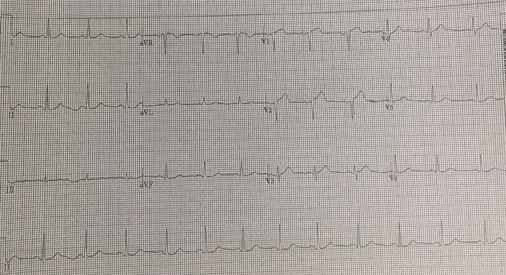
Về mặt kỹ thuật, đây là một STEMI, với ST chênh lên (STE) 1.5 mm ở V1 và 1.5-2.0 mm ở V2. Tiêu chuẩn hiện hành đối với nữ chỉ đòi hỏi 1mm ở V1 và 1.5mm ở V2. Tuy nhiên, tôi nghĩ nhiều người thực hành có thể không coi đây là một STEMI rõ ràng, mà thay vào đó sẽ gọi là “ranh giới” (borderline). Phức bộ QRS bình thường kèm STE và thể tích lớn bên dưới sóng T ở V1-V3 khẳng định nhồi máu cơ tim do tắc (Occlusion MI, OMI). Về mặt kỹ thuật, không có ST chênh xuống (STD) ở V6 và I, tuy nhiên hình thái trông giống STD.
Đây là kết quả đọc bằng máy tính ở phía trên:

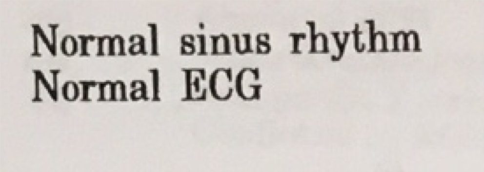
Đây là kết quả tính công thức giúp phân biệt ST chênh lên lành tính ở thành trước với tắc LAD kín đáo (OMI):

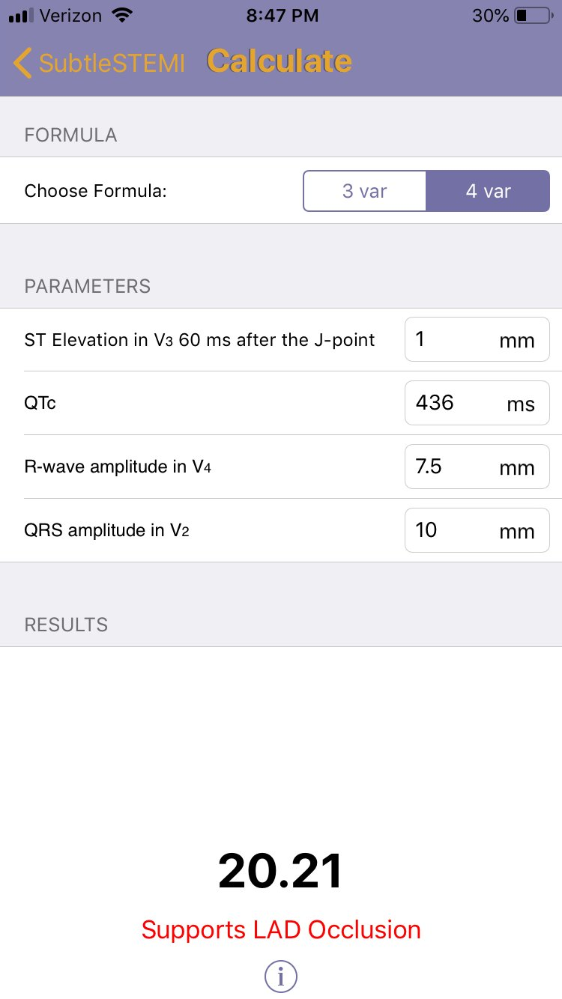
Có sẵn một điện tâm đồ nền:

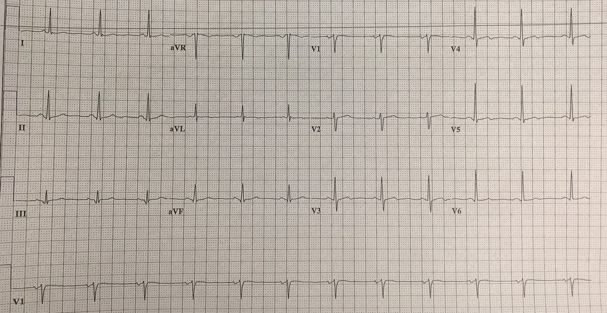
Người thực hành ở bệnh viện tuyến trước lo ngại và đã gọi cho các bác sĩ tim mạch của chúng tôi; họ nhận chuyển viện nhưng cho biết muốn đánh giá bệnh nhân khi đến nơi rồi mới kích hoạt phòng thông tim (cath lab).
Họ đã ghi vài điện tâm đồ lặp lại tại bệnh viện tuyến trước trước khi vận chuyển:

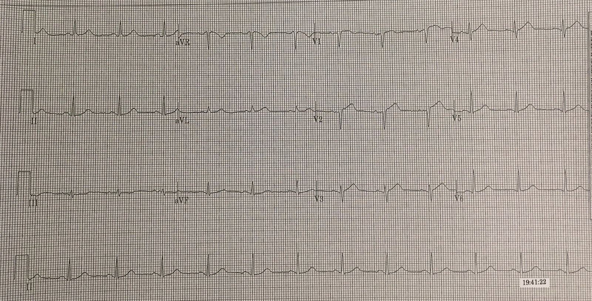

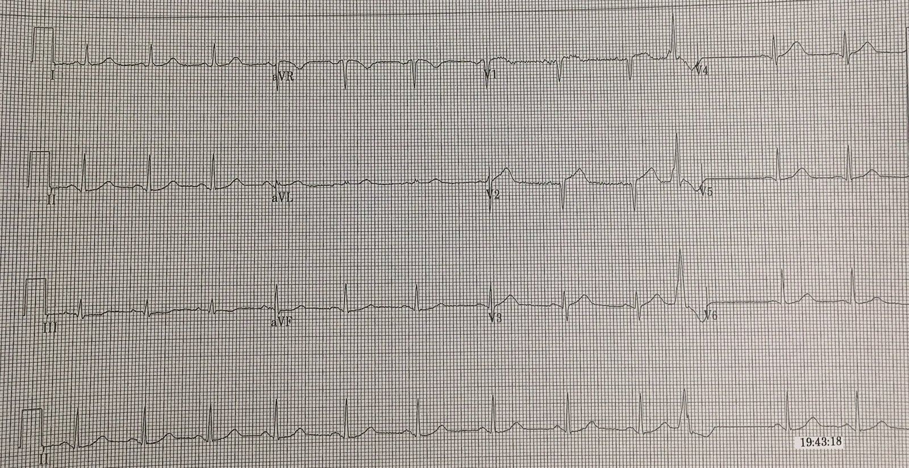

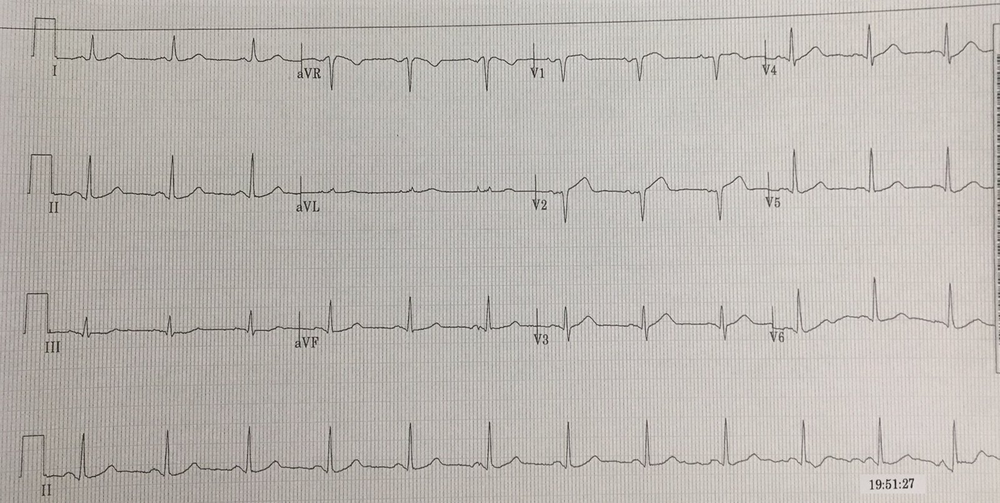
Đến lúc bệnh nhân tới cơ sở của chúng tôi, bà đã được dùng aspirin và nitroglycerin, và cơn đau dường như đã hết hoàn toàn. Bà không được dùng bất kỳ thuốc opioid nào (loại thuốc sẽ che lấp cơn đau mà không tác động tới hội chứng vành cấp (ACS) bên dưới). Bà không có triệu chứng vào thời điểm ghi điện tâm đồ này khi đến khoa cấp cứu (ED) của chúng tôi:

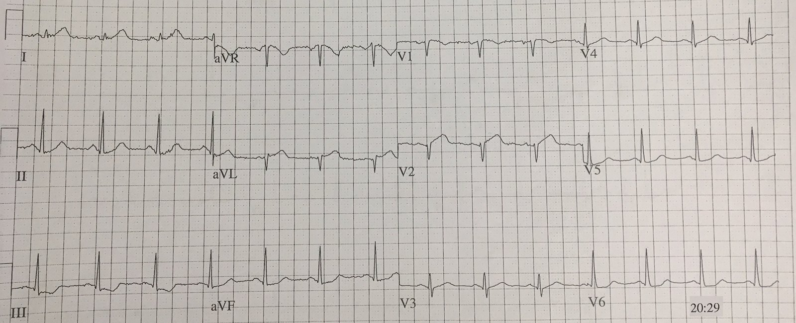
Điện tâm đồ này cho thấy nhồi máu cơ tim do tắc (Occlusion MI) dai dẳng nhưng không đạt tiêu chuẩn STEMI. V2 vẫn có STE và sóng T tối cấp. Có sóng Q mới ở aVL, kèm STE và sóng T lớn. Chuyển đạo I có sóng T tối cấp rõ ràng mà không có STE. II, III, aVF và V6 có STD.
Bệnh nhân này có nhồi máu cơ tim do tắc đang tiếp diễn, dù không có triệu chứng. Ngay cả khi không nhận ra OMI, các điện tâm đồ này là bằng chứng của nhồi máu xuyên toàn bộ bề dày thành tim đang tiếp diễn bất chấp aspirin và nitroglycerin. Bà cần được điều trị nội khoa tối đa theo mọi hướng dẫn hiện hành (bao gồm heparin và thuốc ức chế P2Y12 theo chỉ định của tim mạch), đồng thời cân nhắc thông tim cấp cứu trong trường hợp thiếu máu cục bộ dai dẳng.
Vậy bạn sẽ làm gì cho bệnh nhân này?
Dưới đây là những quyết định có thể có của ê-kíp tiếp nhận (giả định rằng ê-kíp đầu tiên đã nhận ra điện tâm đồ đầu tiên đạt tiêu chuẩn STEMI và ngay từ đầu đã quyết định chuyển viện cấp cứu cho bệnh nhân!):
1) Nhân viên y tế tiếp nhận không nhận ra tình trạng tắc dai dẳng trên điện tâm đồ tại cơ sở tiếp nhận, và vì vậy diễn giải đây là một điện tâm đồ đã cải thiện (“giờ chỉ còn chút ST chênh xuống”) ở một bệnh nhân không triệu chứng. Trong tình huống này, không ai cảm thấy có một tình trạng cấp cứu đang diễn ra, và bệnh nhân sẽ chỉ được theo dõi tại khoa cấp cứu cho tới khi được nhập khoa tim mạch, có lẽ không ghi thêm điện tâm đồ liên tiếp nào trừ khi bệnh nhân than phiền triệu chứng tái phát. Tôi tin rằng đây là kết cục phổ biến nhất, với cách biệt rất xa, cho bệnh nhân này trên khắp thế giới vào năm 2019. Dù các hướng dẫn hiện hành không công nhận “nhồi máu cơ tim do tắc”, cách xử trí này vẫn sai theo chính các hướng dẫn hiện hành, vì có thiếu máu cục bộ đang hoạt động thấy rõ trên điện tâm đồ này (ST chênh xuống mới), do đó bệnh nhân có thiếu máu cục bộ đang tiếp diễn và phải được điều trị nội khoa tối đa (và thông tim nếu thiếu máu cục bộ chưa hết hoàn toàn).
2) Nhân viên y tế coi bệnh nhân này là một “STEMI thoáng qua” (transient STEMI) (về mặt kỹ thuật điều này chính xác, bà đã có STEMI trước đó và bây giờ thì không). Theo hiểu biết của tôi, không có khuyến cáo nào trong hướng dẫn giải thích ACC/AHA khuyến nghị gì cho STEMI thoáng qua. Thực hành hiện nay rất khác nhau, nhưng dựa trên kinh nghiệm ngắn ngủi của tôi và báo cáo từ các cơ sở khác, phần lớn những bệnh nhân này không được đưa cấp cứu tới phòng thông tim vào năm 2019.
3) Nhân viên y tế có kỹ năng đọc điện tâm đồ và hiểu rằng bệnh nhân này có bằng chứng nhồi máu xuyên thành đang tiếp diễn do nhồi máu cơ tim do tắc, dù thực tế bà không có triệu chứng và không còn đạt tiêu chuẩn STEMI. Không có y văn nào khớp hoàn hảo với tình huống này (một bệnh nhân từng có OMI có triệu chứng [STEMI(+)] mà nay là OMI dai dẳng không triệu chứng [STEMI(-)]. Vì vậy chúng ta sẽ phải suy rộng từ lẽ thường và y văn liên quan.
Phần lẽ thường thì dễ – bệnh nhân này có khả năng cực kỳ cao bị nhồi máu cơ tim do tắc đang tiếp diễn và gây nhồi máu xuyên toàn bộ bề dày thành tim, và do đó bà sẽ được lợi khi được đưa cấp cứu tới phòng thông tim để giảm thiểu vùng nhồi máu, khôi phục dòng máu và phòng ngừa biến chứng. Không có y văn nào dành riêng cho tình huống này bác bỏ lẽ thường đó.
Ngoài việc dùng lẽ thường, chúng ta có một lượng rất nhỏ y văn về STEMI thoáng qua (các OMI STEMI[+] có triệu chứng trở thành OMI STEMI[-] đã tái tưới máu không triệu chứng) và một nghiên cứu ở bệnh nhân có STEMI dai dẳng trên điện tâm đồ dù đã hết đau hoàn toàn. Xem phần ghi chú ở cuối bài để biết đầy đủ chi tiết, nhưng về cơ bản, có lợi ích khi đưa cấp cứu các STEMI dai dẳng không triệu chứng, trong khi không phát hiện lợi ích nào với STEMI thoáng qua dù có vài bệnh nhân bị tắc lại trong thời gian chờ (nhưng hãy nhớ, những bệnh nhân này nhiều khả năng không có điện tâm đồ cho thấy OMI dai dẳng như bệnh nhân của chúng ta ở đây, nên các nghiên cứu này không áp dụng được).
Quay lại ca bệnh:
Nhân viên y tế đã nhận ra thiếu máu cục bộ dai dẳng và khả năng tắc mạch, và đã trao đổi với tim mạch, những người đã đưa bệnh nhân đi thông tim ngay. Họ phát hiện tắc hoàn toàn cấp do huyết khối ở LAD đoạn gần. Họ đã tái thông tổn thương này. Bà cũng có bệnh động mạch vành (CAD) không cấp tính ở thân chung (50%) và LCx (75%).

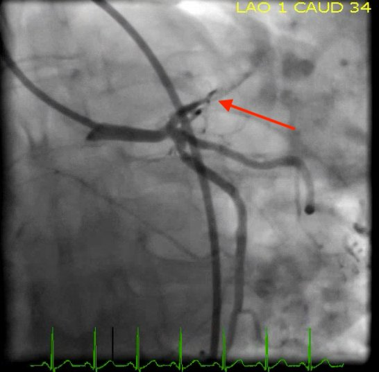

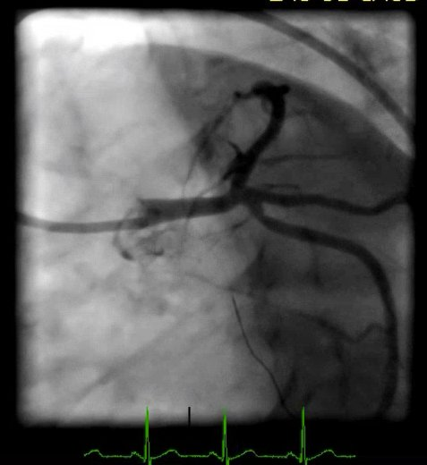

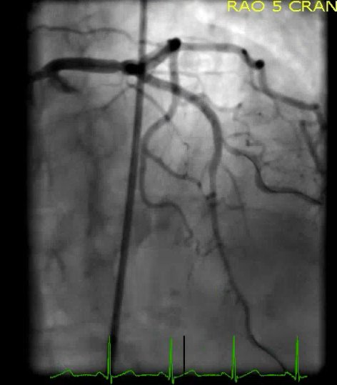
Troponin T ban đầu là 0.46 ng/mL (tăng đáng kể), và troponin T đỉnh vào khoảng 8 giờ sau khi đến viện là khoảng 7.80 ng/mL (tăng RẤT cao). Để tham chiếu, tôi chưa từng thấy bệnh nhân nào ở bệnh viện của tôi sống sót tới lúc ra viện nếu troponin vượt quá 20.00 ng/mL (trong 2.5 năm hồ sơ của tôi, dường như cả 7 ca tôi tìm được có troponin lớn hơn 20 do OMI đều tử vong trong bệnh viện), nhưng đây là một cỡ mẫu nhỏ đến mức vô nghĩa.

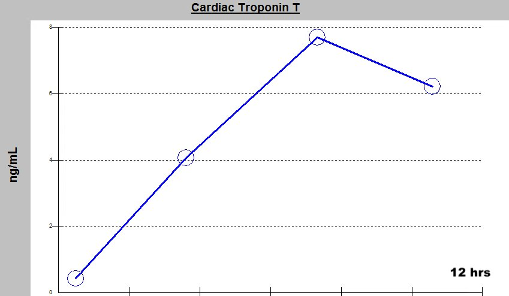
Siêu âm tim cho thấy rối loạn vận động thành ở vách trước, thành trước và mỏm, cùng phân suất tống máu (EF) 45%.
Đây là các điện tâm đồ của bà sau tái tưới máu (hãy kiểm tra xem bạn có nghĩ bà thực sự đã được tái tưới máu ở phía hạ lưu tổn thương, hay bạn nghĩ bà có bằng chứng của hiện tượng không tái lưu (No-Reflow)):

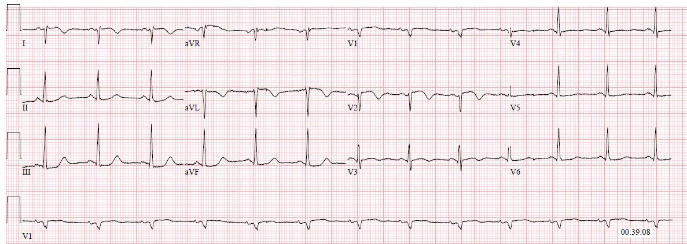

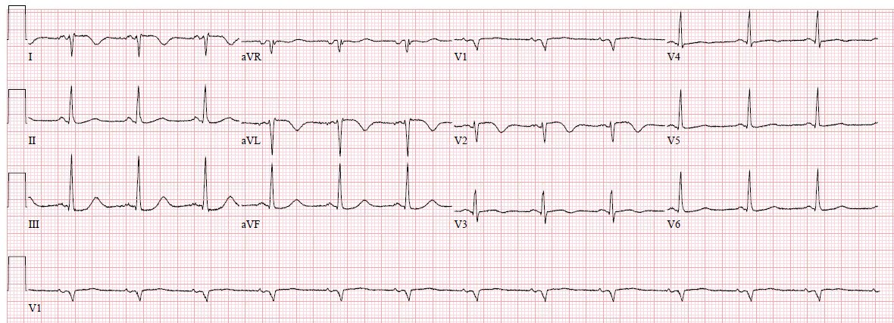
Cả hai đều xác nhận tái tưới máu ở hạ lưu, cho thấy sóng T đảo ngược phần cuối ở các chuyển đạo bị ảnh hưởng trước đó.
Bệnh nhân hồi phục tốt.
Những điểm cần học:
Bạn phải trở nên thành thạo việc đọc điện tâm đồ để nhận ra nhồi máu cơ tim do tắc và bênh vực cho bệnh nhân của mình, vì các hướng dẫn hiện hành là chưa đủ.
Chưa từng có nghiên cứu nào bác bỏ lập luận theo lẽ thường rằng nhồi máu cơ tim do tắc dai dẳng gây thiếu máu cục bộ đang tiếp diễn sẽ được lợi từ can thiệp cấp cứu, vì vậy bạn nên dùng lẽ thường cho tới khi được chứng minh ngược lại: nếu bạn có thể tái thông một chỗ tắc và ngăn thêm cơ tim bị chết, bạn nên làm điều đó càng sớm càng tốt.
Những bệnh nhân từng có STEMI rõ, sau đó trở nên không triệu chứng nhưng vẫn còn STEMI trên điện tâm đồ, đã được chứng minh là được lợi khi kích hoạt phòng thông tim cấp cứu thay vì trì hoãn.
Những bệnh nhân từng có STEMI rõ, sau đó trở nên không triệu chứng và điện tâm đồ hồi phục hoàn toàn, chưa được nghiên cứu đầy đủ, và trong các nghiên cứu nhỏ đó chưa được chứng minh rõ là có lợi. Tuy nhiên, một số bệnh nhân ở nhóm thông tim trì hoãn bị tắc lại và gặp biến chứng trong thời gian trì hoãn. Chỉ vì không ai trong số họ có kết cục thảm khốc trong một quần thể nghiên cứu nhỏ, được theo dõi rất sát, không có nghĩa là họ sẽ không có kết cục xấu trong thực hành thông thường.
Timing of revascularization in patients with transient STEMI: a randomized clinical trial (Thời điểm tái thông mạch ở bệnh nhân STEMI thoáng qua: một thử nghiệm lâm sàng ngẫu nhiên)
Như vậy, theo kinh nghiệm lâm sàng và cách chúng tôi diễn giải y văn, bệnh nhân có ST chênh lên thoáng qua nên được đưa cấp cứu tới phòng thông tim giống như thể ST chênh lên chưa hề hồi phục. Nếu vì lý do nào đó việc chụp mạch vành bị trì hoãn, họ nên được điều trị nội khoa tối đa tại ICU với theo dõi đoạn ST liên tục 12 chuyển đạo dưới sự chú ý sát sao của một người thực hành được đào tạo nâng cao về đọc điện tâm đồ. Lập luận tương tự áp dụng cho bệnh nhân có bằng chứng điện tâm đồ không mơ hồ về tái tưới máu sau nhồi máu cơ tim do tắc (hội chứng Wellens, ví dụ tái tưới máu của nhồi máu cơ tim do tắc thành trước mà không ghi được điện tâm đồ trong lúc tắc). Cả hai nhóm bệnh nhân đều có nguy cơ rất cao bị tắc lại, và tình trạng tắc lại có thể thầm lặng về lâm sàng hoặc quá muộn để ngăn mất cơ tim hay tử vong.
Why we need continuous 12-lead ST segment monitoring in Wellens’ syndrome (Vì sao chúng ta cần theo dõi đoạn ST liên tục 12 chuyển đạo trong hội chứng Wellens)
Wellens’ syndrome, no culprit, what happened? (Hội chứng Wellens, không có thủ phạm, chuyện gì đã xảy ra?)
===================================================================
Thời điểm điều trị tái tưới máu ở bệnh nhân không triệu chứng
Triệu chứng đã hết nhưng dấu hiệu điện tâm đồ dai dẳng:
Đôi khi bệnh nhân có thể đến với ST chênh lên dai dẳng (hoặc các dấu hiệu thiếu máu cục bộ khác) nhưng đã hết đau ngực. Điều này phổ biến một cách đáng ngạc nhiên, và một số nghiên cứu theo dõi điện tâm đồ liên tục 12 chuyển đạo ở bệnh nhân nhập viện vì đau thắt ngực không ổn định báo cáo tỷ lệ cao (15%) thiếu máu cục bộ cơ tim thoáng qua thầm lặng (ST chênh lên), và các dấu hiệu này là yếu tố tiên đoán độc lập mạnh của nhồi máu cơ tim hoặc tử vong trong thời gian nằm viện.(Patel và cs., Krucoff và cs.)
Sau khi hỏi bệnh cẩn thận để bảo đảm bệnh nhân thực sự hết triệu chứng và chưa dùng bất kỳ điều trị giảm đau nào không nhắm vào ACS (opioid) có thể che lấp việc nhận ra thiếu máu cục bộ đang tiếp diễn mà không thực sự giải quyết ACS bên dưới, người thực hành còn lại câu hỏi có nên điều trị cấp cứu cho bệnh nhân như thể triệu chứng vẫn còn hay không. Người ta có thể lập luận rằng bằng chứng điện tâm đồ về thiếu máu cục bộ đang tiếp diễn có nghĩa là chỗ tắc nghi ngờ vẫn đang gây nhồi máu tiếp diễn, và vì vậy điều trị cấp cứu vẫn sẽ có lợi. May mắn thay, Schomig và cs. đã phân ngẫu nhiên 347 bệnh nhân có ít nhất một cơn đau ngực kéo dài 20 phút trong khoảng 12-48 giờ trước khi đến viện, không còn triệu chứng dai dẳng nhưng có ST chênh lên không mơ hồ trên điện tâm đồ, vào nhóm chụp mạch vành ngay kèm PCI hoặc nhóm đánh giá xâm lấn không theo kế hoạch về sau nếu xuất hiện đau thắt ngực tái phát hay các đặc điểm xấu đi khác. Quan trọng nhất, thiết kế nghiên cứu nhấn mạnh thực tế rằng nếu triệu chứng còn dai dẳng thì rõ ràng đã có chỉ định PCI cấp cứu. Những bệnh nhân được PCI cấp cứu có kích thước ổ nhồi máu thất trái trung vị nhỏ hơn có ý nghĩa (8% so với 13%, p=0.001) đo bằng chụp cắt lớp vi tính phát xạ đơn photon (SPECT), cùng với mức giảm không có ý nghĩa thống kê nhưng không đủ lực mẫu của tiêu chí gộp tử vong, tái nhồi máu hoặc đột quỵ ở 30 ngày (4.4% so với 6.6%, p=0.37). Không có bằng chứng nào khác cho trường hợp bệnh nhân đã hết triệu chứng nhưng dấu hiệu điện tâm đồ không mơ hồ vẫn còn. Như vậy, bằng chứng hiện có ủng hộ lý thuyết theo lẽ thường rằng ngay cả bệnh nhân không triệu chứng có bằng chứng điện tâm đồ dai dẳng về nhồi máu xuyên toàn bộ bề dày thành tim (nhồi máu cơ tim do tắc) cũng nên được chụp mạch vành và PCI cấp cứu.
Triệu chứng đã hết và dấu hiệu điện tâm đồ đã hồi phục:
Quyết định khó khăn hơn với những bệnh nhân mà cả triệu chứng lẫn dấu hiệu điện tâm đồ đều đã hồi phục hoàn toàn. Một mặt, bệnh nhân này rõ ràng đang biểu hiện một huyết khối không ổn định có khả năng tắc lại bất cứ lúc nào (và có thể thầm lặng khi điều đó xảy ra(Patel và cs.; Krucoff và cs.)) với hậu quả thảm khốc, có thể xấu đi trước khi kịp đưa bệnh nhân gấp tới phòng thông tim. Mặt khác, người ta có thể lập luận rằng bệnh nhân rất có thể sẽ an toàn nếu được điều trị ACS tích cực và theo dõi cực kỳ sát với theo dõi liên tục 12 chuyển đạo, hoặc ít nhất là các điện tâm đồ liên tiếp được một chuyên gia về các dấu hiệu tắc lại đọc, và rằng rất ít bệnh nhân sẽ xấu đi trong khoảng giữa lúc nhận ra ngay và lúc PCI cấp cứu, đến mức gánh nặng của việc kích hoạt phòng thông tim ban đêm có lẽ phần nào tương đương với nguy cơ gây hại cho bệnh nhân. Có ít nhất ba nghiên cứu giúp chúng ta hiểu nguy cơ và lợi ích trong tình huống này:
Lemkes và cs. đã phân ngẫu nhiên 142 bệnh nhân STEMI thoáng qua (đã hết triệu chứng và ST chênh lên) vào nhóm chụp mạch vành và PCI cấp cứu so với vào ngày hôm sau, tất cả bệnh nhân đều được dùng aspirin, thuốc ức chế P2Y12 và thuốc chống đông. Dù kích thước ổ nhồi máu đo bằng MRI là như nhau ở cả hai nhóm, “4 bệnh nhân (5.6%) trong nhóm chiến lược xâm lấn trì hoãn cần can thiệp khẩn do có dấu hiệu và triệu chứng tái nhồi máu trong lúc chờ chụp mạch vành.” Mỗi bệnh nhân bị tắc lại trong lúc chờ thông tim trì hoãn đều đối mặt với nguy cơ không được nhận ra tình trạng tắc lại, nhồi máu cơ tim nặng hơn do thời gian thiếu máu cục bộ cộng thêm trong lúc trì hoãn, và một nguy cơ nhỏ nhưng có thật là xấu đi thực sự và tử vong trong khoảng giữa lúc nhận ra tắc lại và lúc PCI.
Ownbey và cs. đã so sánh kết quả chụp mạch vành cấp cứu của 18 bệnh nhân trước viện có STEMI thoáng qua với 75 bệnh nhân có STEMI bền vững. Tổn thương có ý nghĩa (lớn hơn hoặc bằng 50%) được tìm thấy ở lần lượt 94% và 97% bệnh nhân (p=0.6), và tổn thương gần hoàn toàn hoặc hoàn toàn (lớn hơn hoặc bằng 95%) được tìm thấy ở lần lượt 63% và 85% (p=0.1). Như vậy, ngay cả những người đã hồi phục hoàn toàn cả triệu chứng lẫn ST chênh lên vẫn có tỷ lệ tắc hoàn toàn/gần hoàn toàn là 63%. Không có kết cục lâm sàng nào khác được báo cáo.
Meisel và cs. đã nghiên cứu 1244 bệnh nhân STEMI liên tiếp và tìm thấy 63 (5%) có STEMI thoáng qua. Những bệnh nhân này được điều trị tích cực bằng nitroglycerin tĩnh mạch, aspirin, clopidogrel và heparin. So với STEMI bền vững, STEMI thoáng qua liên quan với tổn thương cơ tim ít hơn, bệnh động mạch vành ít lan rộng hơn, mức dòng chảy TIMI cao hơn và chức năng tim tốt hơn. Blondheim và cs. cũng so sánh STEMI thoáng qua với STEMI bền vững và thấy rằng STEMI thoáng qua báo trước tỷ lệ tử vong thấp hơn, tổn thương cơ tim theo troponin thấp hơn và chức năng tim tốt hơn. Điều này không đáng ngạc nhiên, vì tái tưới máu bằng bất kỳ cách nào (kể cả tái tưới máu tự phát) đều báo trước tiên lượng tốt hơn, nhưng nó không trả lời câu hỏi liệu đa số bệnh nhân không bị ảnh hưởng có nặng ký hơn kết cục thảm khốc hiếm gặp, điều chắc chắn sẽ xảy ra nếu mọi STEMI thoáng qua đều được điều trị theo kiểu trì hoãn, hay không.
Như vậy, theo kinh nghiệm lâm sàng và cách chúng tôi diễn giải y văn, bệnh nhân có ST chênh lên thoáng qua nên được đưa cấp cứu tới phòng thông tim giống như thể ST chênh lên chưa hề hồi phục. Nếu vì lý do nào đó việc chụp mạch vành bị trì hoãn, họ nên được điều trị nội khoa tối đa tại ICU với theo dõi đoạn ST liên tục 12 chuyển đạo dưới sự chú ý sát sao của một người thực hành được đào tạo nâng cao về đọc điện tâm đồ. Lập luận tương tự áp dụng cho bệnh nhân có bằng chứng điện tâm đồ không mơ hồ về tái tưới máu sau nhồi máu cơ tim do tắc (hội chứng Wellens, ví dụ tái tưới máu của nhồi máu cơ tim do tắc thành trước mà không ghi được điện tâm đồ trong lúc tắc). Cả hai nhóm bệnh nhân đều có nguy cơ rất cao bị tắc lại, và tình trạng tắc lại có thể thầm lặng về lâm sàng hoặc quá muộn để ngăn mất cơ tim hay tử vong.

===================================
Bình luận của KEN GRAUER, MD (6/3/2019):
===================================
Bàn luận xuất sắc của Dr. Meyers, cung cấp thêm một ví dụ nữa về: i) Bệnh sử và điện tâm đồ ban đầu đã là tất cả những gì cần có để biện minh cho chỉ định rõ ràng thông tim cấp ở ca này — bất kể các tiêu chuẩn chặt chẽ của STEMI cấp có được thỏa mãn hay không; và, ii) việc so sánh bản ghi ban đầu với một điện tâm đồ nền sau đó loại bỏ mọi nghi ngờ rằng các dấu hiệu điện tâm đồ trên bản ghi ban đầu là có thật.
- Với hy vọng giúp nhận biết rõ hơn các dấu hiệu điện tâm đồ bất thường ban đầu — tôi tập trung bình luận vào 2 bản ghi đầu tiên được trình bày trong ca này (Hình 1).

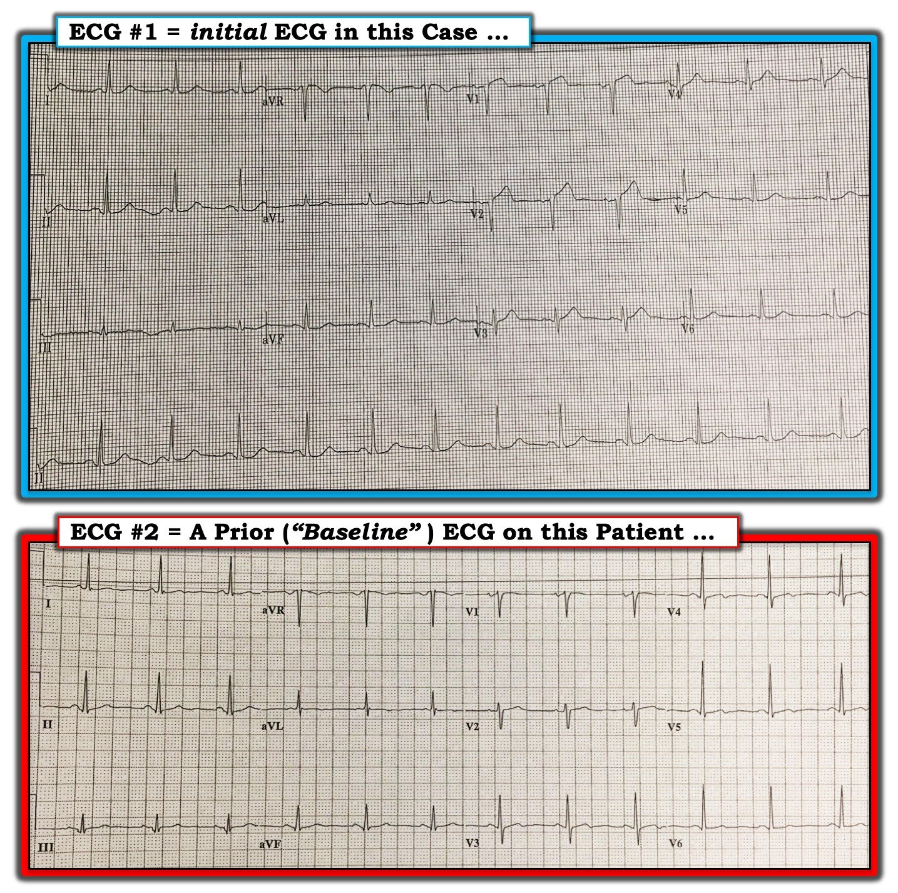
====================
BÌNH LUẬN: Ở một bệnh nhân đau ngực mới khởi phát — Điện tâm đồ #1 đã phải là tất cả những gì cần có để biện minh cho thông tim cấp.
- Bất kể các bản ghi tiếp theo cho thấy gì — các chuyển đạo V1, V2 và V3 trên điện tâm đồ #1 cho thấy cần nghĩ tới OMI đang tiến triển cấp cho đến khi chứng minh được điều ngược lại.
- Dù chúng tôi thường khuyến khích ghi điện tâm đồ liên tiếp nhiều lần trong những giờ đầu của một biến cố tim cấp nghi ngờ — quyết định thông tim ngay ở ca này không nên phụ thuộc vào việc chờ xem điện tâm đồ ghi lại cho thấy gì. Rõ ràng, nếu điện tâm đồ ghi lại cho thấy ST chênh lên lan tỏa hơn, nhiều hơn — chẩn đoán xác định STEMI sẽ dễ đưa ra hơn. Nhưng nếu điện tâm đồ kế tiếp cho thấy ST chênh lên ít hơn ở các chuyển đạo V1 và V2 thì sao? Làm sao chúng ta biết được điều này phản ánh sự đảo ngược tự phát hoàn toàn của một chỗ tắc cấp? — hay là một điện tâm đồ chuyển tiếp sắp xuất hiện các thay đổi tái tưới máu (ST chênh xuống/sóng T đảo ngược) từ một ổ nhồi máu đã hoàn tất? (Trên đường từ ST chênh lên tới sóng T đảo ngược — có thể có “giả bình thường hóa” của sóng ST-T …).
- Ngoài ra — ở ca này không cần đến giá trị troponin huyết thanh để hỗ trợ quyết định có chỉ định thông tim ngay hay không. Thường có một “độ trễ” cho tới khi troponin tăng trong nhồi máu cơ tim cấp — vì vậy không nên lãng phí thời gian chờ troponin tăng. Điện tâm đồ #1 ban đầu này ở bệnh nhân đau ngực mới khởi phát đã phải là tất cả những gì cần có để biện minh cho thông tim ngay.
- Chuyển đạo V1 — bình thường không biểu hiện ST chênh lên, đặc biệt là không với đoạn khởi đầu ST thẳng như chúng ta thấy trong Hình 1.
- Bằng chứng ủng hộ rằng sóng ST-T ở chuyển đạo V1 thực sự bất thường ở bệnh nhân đau ngực mới khởi phát này — đến từ sóng T cao, nhọn và đáy rộng một cách không tương xứng mà chúng ta thấy ở chuyển đạo V2. Đây là một sóng T tối cấp.
- Trong bối cảnh các chuyển đạo lân cận V1 và V2 — sóng T ở chuyển đạo V3 có lẽ cũng tối cấp — ở chỗ nó tương đối cao và đáy rộng so với biên độ khiêm tốn của sóng R ở chuyển đạo này. LƯU Ý: Nếu xét riêng lẻ chuyển đạo này — tôi sẽ không nhất thiết đọc sóng T ở chuyển đạo V3 của điện tâm đồ #1 là bất thường. NHƯNG — trong bối cảnh hình ảnh của các chuyển đạo V1 và V2 ở bệnh nhân đau ngực mới khởi phát này — tôi tin rằng sóng ST-T ở chuyển đạo V3 là sự tiếp nối của quá trình được cho là cấp tính này.
- ĐIỂM THEN CHỐT (PEARL) #1: Một trong những cách phân biệt tắc LAD đoạn gần hơn với tắc LAD đoạn xa hơn — là dựa vào hình dạng sóng ST-T ở các chuyển đạo chi. Theo đó, khi tắc LAD đoạn gần hơn — thường có ST chênh lên kín đáo nhưng có thật ở chuyển đạo aVL — và ST chênh xuống soi gương ở các chuyển đạo thành dưới. Dù không thấy sai lệch đoạn ST ở các chuyển đạo chi của điện tâm đồ #1 (có lẽ còn quá sớm trong diễn tiến của OMI này để xuất hiện những thay đổi đó …) — các sóng ST-T ở các chuyển đạo thành dưới của điện tâm đồ #1 không hoàn toàn bình thường! Thay vào đó, có một mức độ dẹt sóng ST-T ở các chuyển đạo thành dưới này.
- ĐIỂM THEN CHỐT (PEARL) #2: Đôi khi khó xác định từ 2 hoặc 3 nhát bóp ở chuyển đạo II của điện tâm đồ 12 chuyển đạo xem có hay không có sai lệch sóng ST-T bất thường. Ví dụ, trên điện tâm đồ #1 — có nhiễu đường nền làm biến dạng phức bộ QRS thứ 2 ở chuyển đạo II. Đừng quên rằng chúng ta có không dưới 12 “lần nhìn” vào chuyển đạo II trên dải nhịp chuyển đạo II dài ở cuối bản ghi — và dải nhịp này cho thấy rõ đoạn ST dẹt kín đáo (thẳng đuỗn) ở chuyển đạo này.
- ĐIỀU CỐT LÕI về Điện tâm đồ #1: Hình dạng sóng ST-T ở các chuyển đạo V1, V2 và V3 ở bệnh nhân đau ngực mới khởi phát này gợi ý OMI cấp đang tiến triển cho đến khi bạn chứng minh được điều ngược lại — bất kể troponin ban đầu và điện tâm đồ kế tiếp cho thấy gì.
====================
Đến thời điểm này — một điện tâm đồ cũ của bệnh nhân này đã được tìm thấy ( = Điện tâm đồ #2 trình bày trong Hình 1). Bạn Thấy Gì Khi so sánh điện tâm đồ #1 và điện tâm đồ #2?
- Cả hai bản ghi đều cho thấy nhịp xoang với tần số trong khoảng 70-80/phút. Không có thay đổi đáng kể về trục mặt phẳng trán giữa 2 điện tâm đồ này — vì vậy việc so sánh các chuyển đạo chi giữa 2 bản ghi này là hợp lệ. Có những bất thường sóng ST-T không đặc hiệu tối thiểu ở cả hai bộ chuyển đạo chi — không có thay đổi đáng kể giữa điện tâm đồ #1 và 2.
- NHƯNG — đã có thay đổi rõ rệt về hình dạng các chuyển đạo trước tim giữa 2 bản ghi này. Vùng chuyển tiếp xuất hiện sớm hơn một chút (giữa chuyển đạo V2 và V3) trên bản ghi nền ( = điện tâm đồ #2). Quan trọng nhất — KHÔNG thể nghi ngờ gì rằng ST chênh lên mà chúng ta thấy ở chuyển đạo V1 và V2 của Điện tâm đồ #1 là MỚI xuất hiện kể từ khi ghi bản ghi nền! Tương tự, hình dạng sóng T dương ở các chuyển đạo trước tim còn lại của điện tâm đồ #1 là một thay đổi mới so với điện tâm đồ nền. Ở một bệnh nhân đau ngực mới khởi phát — việc tìm thấy bản ghi nền này gần như xác nhận chẩn đoán giả định của chúng ta là tắc LAD cấp.
- T.B. (P.S.): Tiếp nối điểm tôi đã nêu ở trên — điện tâm đồ thứ 1 được ghi tại khoa cấp cứu của Dr. Meyers ( = bản ghi thứ 6 trình bày trong ca này, ghi lúc 20:29) — nay cho thấy ST chênh lên rõ ở chuyển đạo aVL — kèm ST chênh xuống soi gương ở từng chuyển đạo thành dưới. Những dấu hiệu ở chuyển đạo chi hiện thấy trên điện tâm đồ ghi lúc 20:29 này phù hợp với tắc cấp do huyết khối ở LAD đoạn gần đã được phát hiện khi thông tim.